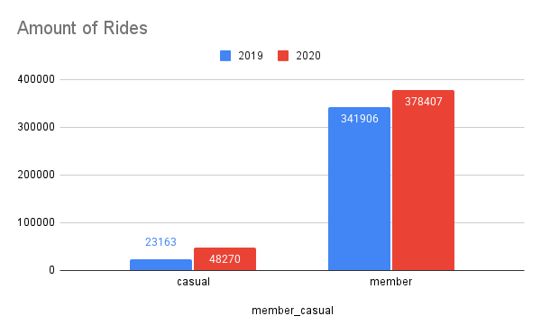
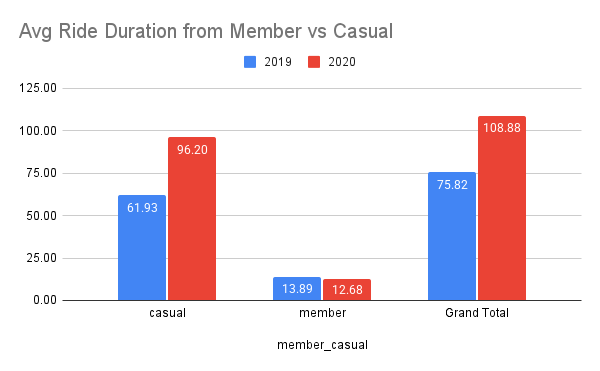
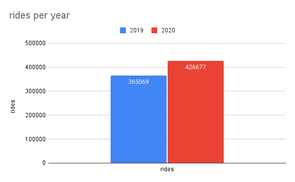

Cyclist Rental Analytics
Goal: Analyze bike rentals to identify demand patterns, top stations, and differences between members vs casual riders.
BigQuery SQL
Google Sheets
Data Storytelling
Tools
- BigQuery SQL
- Google Sheets (charts)
Key Insights
- Peak demand occurs during commute hours, useful for staffing and rebalancing.
- Top stations account for a large share of rides, making them critical operational hubs.
- Demand peaks mid-week (Wed–Fri), suggesting commute-driven usage.
- Members generate most rides, meaning repeat usage is driven by subscriptions.
- Casual riders take longer trips, indicating leisure/tourism use cases.
- Rides increased from 2019 to 2020, indicating higher adoption.
Charts
Rides by Hour (2019 vs 2020)
Takeaway: Usage peaks in morning and late afternoon commute hours.

Amount of Rides (Members vs Casuals)
Takeaway: Members account for most rides, indicating subscription-driven usage.
Average Ride Duration (Members vs Casuals)
Takeaway: Casual riders take longer trips, suggesting leisure or tourism behavior.
Rides per Year (2019 vs 2020)
Takeaway: Total rides increased year-over-year, indicating higher adoption.
SQL (BigQuery)
Queries used to merge, clean, validate, and aggregate the dataset.
Google Sheets
Charts and pivots used to validate and communicate results.
Recommendations
- Increase bike availability and rebalancing during commute hours to reduce empty docks.
- Prioritize maintenance and capacity planning for top stations that drive most rides.
- Launch conversion campaigns for casual riders (e.g., weekend pass → membership trial).
- Promote longer leisure routes and tourist bundles for casual riders.